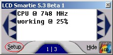
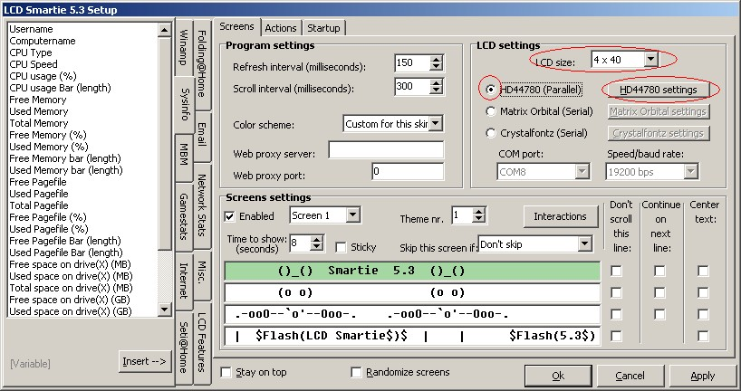
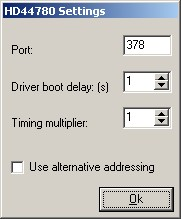

Parallel (HD44780 compatible) display configuration
Select setup (highlighted in red):
Setup screen will appear:
The important settings are highlighted in red.
- Select "HD44780 (Parallel)".
- Set the correct LCD Size for your display.
Press "HD44780 settings", and answer "No" to the question "The HD44780 driver is not currently loaded. Should I apply your settings and load the driver?"
Configure the settings for your display:
- Port: the address of your parallel port (usually 378, but 278 and 3BC are also common).
- Driver boot delay (s): Only change this setting if you are having trouble with LCD Smartie using your display too quickly after booting.
- Timing multiplier: If your display fails to work or displays random characters then your display may need longer to process our commands - try setting it to 5.
- Use alternative addressing: Use this if your display is a 1x16 and only half of the display is working.
Press OK, and then OK again. Your HD44780 compatible display should now be working correctly with LCD Smartie! If it is not then please see the FAQ.